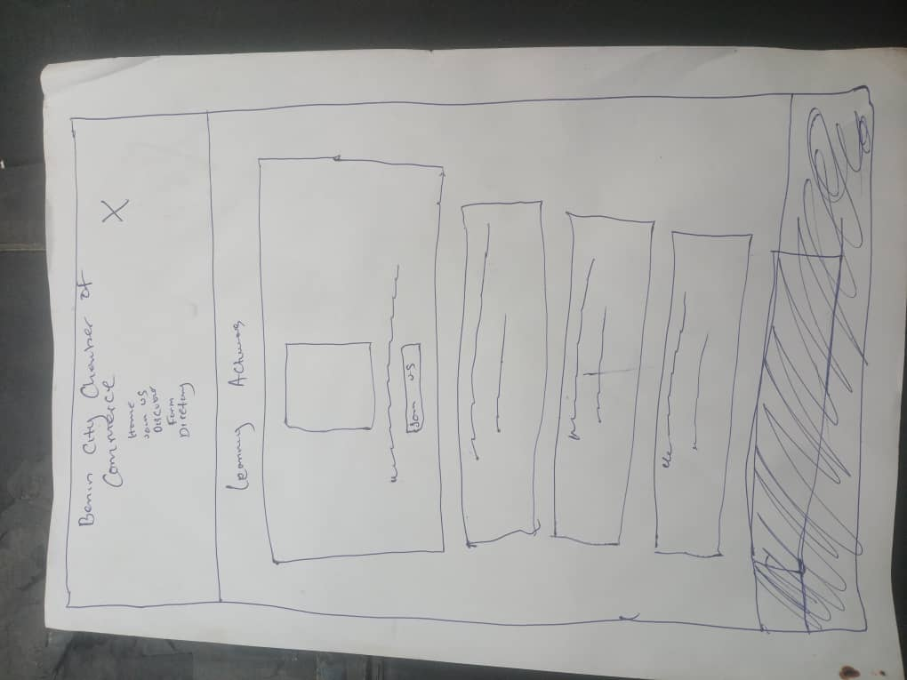

Site Name
Benin City Chamber of Commerce - This name represents the city of Benin, Edo State, Nigeria, and its business community.
Site Purpose
- Promote business networking and economic growth in Benin City.
- Provide information about local businesses, events, and opportunities.
Scenarios
- What upcoming events will help local businesses connect and grow?
- How can I join the chamber and what are the benefits?
- Where can I find a directory of businesses in Benin City?
Color Schema
- Dark Green (#004d40) - Used for headings and navigation.
- Orange (#ff9800) - Used for accents and call-to-action buttons.
Typography
- Montserrat - Used for headings.
- Open Sans - Used for body text.
Wireframe
Below are wireframes for the homepage layout:
